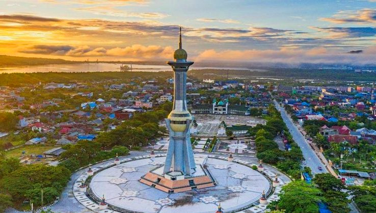
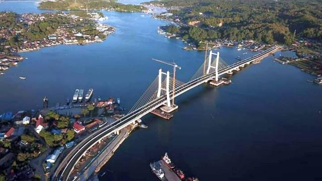
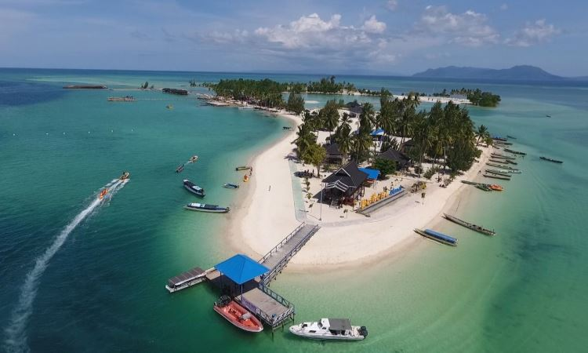
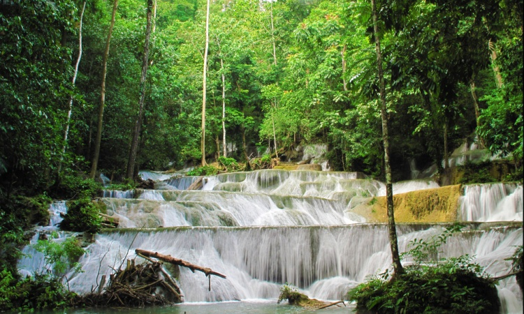

Sejarah

Penemu, penulis dan pembuat peta pertama tentang Kendari adalah
Vosmaer (berkebangsaan Belanda) tahun 1831. Pada tanggal 9 Mei 1831
Vosmaer membangun istana raja Suku Tolaki bernama TEBAU di sekitar
pelabuhan Kendari dan setiap tanggal 9 Mei pada waktu itu dan
sekarang dirayakan sebagai hari jadi Kota Kendari.
Pada zaman kolonial Belanda Kendari adalah Ibukota Kewedanan dan Ibu
kota Onder Afdeling Laiwoi. Kota Kendari pertama kali tumbuh sebagai
Ibukota Kecamatan dan selanjutnya berkembang menjadi Ibukota
Kabupaten Daerah Tingkat II berdasarkan Undang-Undang Nomor 29 Tahun
1959, dengan perkembangannya sebagai daerah permukiman, pusat
perdagangan dan pelabuhan laut antar pulau. Luas kota pada saat itu
± 31.400 km².
Geografis

Kota Kendari terletak di jazirah Tenggara Pulau Sulawesi. Wilayah
daratannya sebagian besar terdapat di daratan, mengelilingi Teluk
Kendari dan terdapat satu pulau, yaitu Pulau Bungkutoko, secara
geografis terletak di bagian selatan garis khatulistiwa, berada di
antara 3º54’30” - 4º3’11” Lintang Selatan dan 122º23’ - 122º39’
Bujur Timur.
Wisata
Tempat wisata Kendari, memiliki keindahan alam yang sangat menarik
dan pastinya sangat cocok untuk dijadikan destinasi wisata saat
Liburan. Pengunjung kota ini bisa mengunjungi objek wisata jenis,
pulau, pantai, wisata bawah laut, hingga wisata dataran tinggi
berupa taman selfie dan air terjun.
Pulau Bokori

Pulau Bokori yakni sebuah pulau tempat wisata Kendari yang sangat
indah dan bersih. Pulau ini berada tak jauh dari kota Kendari.
Pulau Bokori sebenaranya masuk kedalam wilayah kabupaten Konawe.
Namun banyak yang mengenalnya sebagai salah satu pulau wisata kota
Kendari.
Selain menjadi pulau wisata untuk berlibur bersama keluarga, pulau
Bokori juga bjsa menjadi salah satu lokasi Gethring Kantor atau
perusahaan. Pemilihan tempat wisata Kendari ini karena lokasinya
cukup luas dan juga fasilitas yang ada sangat lengkap. Di sana
sudah dibangun resort, penginapan, amphiteater, area gazebo, sport
zone, kantin, toilet hingga fasilitas penyebrangan yang aman.
Air Terjun Moramo

Air Terjun Morama memilki ketinggian sekitar 100 meter yang berupa
air tejun berundak. Terdapat lebih dari 7 buah undakan besar dan
60 undakan kecil. Air terjun tempat wisata Kendari ini juga
memiliki beberapa kolam yang bisa dijadikan tempat untuk
pemandian/berendam.
Air terjun yang meluncur deras pada batuan granit yang terbentuk
selama ribuan tahun lalu ini terasa lebih istimewa dengan
warna-warna pelangi yang terpancar dari buih-buih air yang
mengalir. Air terjun Moramo tempat wisata Kendari ini juga memilki
keunikan lain. Airnya mengandung sulfur dan alkali serta
dinding-dinding batunya yang tidak licin karena lumut sulit
tumbuh.